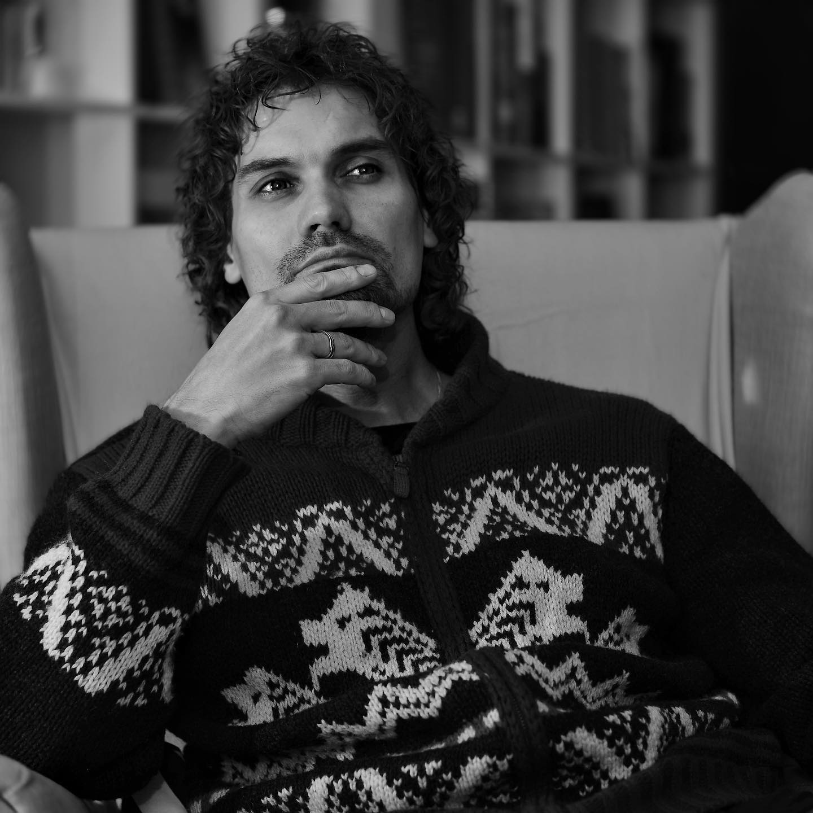

Вчера на парковке услышал разговор двух мужчин. Они рассуждали на тему успеха... что дескать человек, который в современном мире не способен заработать хотя бы миллион, не заслуживает уважения как личность и, несмотря на то, что он может при этом быть хорошим специалистом, прислушиваться к нему не стоит, так как «если ты такой умный, то чё такой бедный»... Ну и всё в таком духе.
Я как-то уже писал на эту тему, но тут подумал, что вообще-то для общества это серьезная проблема. Причём проблема не только в том, что акцент на материальный успех сильно корежит мозги и часто делает жизнь людей несчастливой и бессмысленной, но и в том, что просто отмахнуться от материальности тоже нельзя, ведь отсутствие у народа уважения к деньгам - точно так же не есть хорошо.
Вообще, это вопрос социальных приоритетов - что мы как общество (какие результаты и какую деятельность) готовы вознаграждать вниманием, признанием и уважением?
Тот же Кант, получил первую стабильно-оплачиваемую работу после 40-а, а дом смог купить в 60. А ведь это Кант - один из самых значительных мыслителей за всю историю рода людского. Гельдерлин всю жизнь (вплоть до болезни) работал гувернером, а в своей съёмной комнате всегда сидел под одеялом, потому как денег на отопление у него не было. Гельдерлин… уникум, которого называют создателем немецкой литературы и величайшим поэтом нашей планеты. Шопенгауэр, Ахматова… да, впрочем, перечислять можно бесконечно. Речь о том, что мы хотим получить в итоге: новое наследие нового «Шопенгауэра» или очередного чувака на мерсе? В погоне за деньгами (и как источника выживания, и как источника возможностей, и как показателя статуса) не пишутся великие стихи и романы, не создаются философские школы, не делаются научные открытия, не рождается музыка и живопись. В погоне за деньгами рождаются только деньги… ну или геморрой. При этом я ничего не имею против денег и стремления к целям. Отнюдь. Это важные «штуки». Но, как это ни банально звучит - совсем не самые важные. Тем более, что как показывает практика, те же предприниматели, которые создают что-то значительное, гонятся не за деньгами, а за мечтой.
Так какие у нас у общества социальные приоритеты? Ведь, по сути, это наша с вами ответственность, побеждает всегда тот волк, которого кормят. И если во времена Гельдерлина и Шопенгауэра можно было кивать на жесткие границы традиционного уклада и всё такое, то сейчас - это исключительно вопрос общественного мировоззрения и позиции самих людей.
У меня как-то был разговор с крупным блогером-миллионником из сферы бизнеса, я предложил взаимный рассказ, чтобы аудитории расширили свое представление о мире. На что получил ответ, что это даже обсуждать смешно, ведь наша значимость несопоставима и куда вообще я лезу. Имеет право, конечно, да и личность вроде бы адекватная... только возникает вопрос - в каком мире этот человек хочет жить и «какого волка он кормит»?
Ну а мы? Какого волка кормим мы?
И не надо тут, по нашей старой русской привычке, кивать на государство. Оно здесь вообще не при чем. Каждый человек этот выбор делает персонально, особенно сегодня, в мире соцсетей, глобальных коммуникаций и тотальной доступности. Сколько людей ходят на выставки, покупают сборники современных поэтов, делятся впечатлениями о современниках из сферы науки и культуры? Сколько людей покупают картины, тратятся на необычные книжки? Сколько внимания и денег мы отдаем тем людям, которых, может быть, когда-нибудь назовут Шопенгауэрами и Ахматовыми?
Как метко заметил Шпенглер: «Если в мире истин все решает доказательство, то в мире фактов решающую роль играет успех». Выбор, как говорится, за нами.
А что думаете вы? 💬

